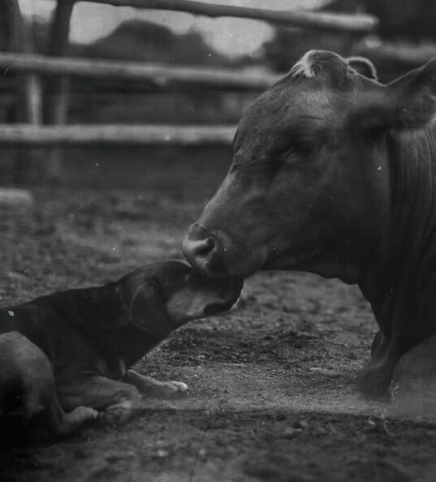

Inicio
Quiénes somos
Productos
Contacto
Dietética vegana
Historia
Nuestro comienzo empezo para brindarte alimentos de excelente calidad, Mostrando que es posible consumir diversas variedades de alimentos sin generar ningún tipo de explotación animal.
¿Que es el Veganismo?
Son muchos los científicos y historiadores que describen el veganismo y vegetarianismo sus posturas y ramificaciones.Los britanicos Donald Watson y Elsie Shrigley fueron quiénes desarrollaron el término veganismo. Ambos seguían una forma de vida en la que evitaban explotar o dañar a los animales.
Esto implicaba no comer animales, pero también eran conscientes del sufrimiento que producía el consumo de huevos y de leche. Tampoco se vestían con ellos ni los utilizaban como medios de transporte, entretenimiento, etc.
Aunque ni Watson ni Shrigley fueron los primeros veganos, sí que sintieron la necesidad de crear un término que se identificase con las inquietudes de aquellos vegetarianos que lo eran por motivos éticos, frente a aquellos que lo eran por motivos de salud o que consumían huevos, leche y otros productos de origen animal. El motivo por el que decidieron crear el término vegan no debe ser entendido como un afán por destacar, sino que estas dos personas fueron conscientes de que emplear un mismo término para designar a personas con intereses y formas de vida diferentes creaba confusión. Así, en 1944 Donald Watson y Elsie Shrigley nombraron el término veganismo. Watson lo definió de este modo:
El veganismo es una filosofía de vida que excluye todas las formas de explotación y crueldad hacia el reino animal e incluye una reverencia a la vida. En la práctica se aplica siguiendo una dieta vegetariana pura y anima al uso de alternativas para todas las materias derivadas parcial o totalmente de animales. En otras palabras,
el Veganismo
no es sólo una dieta que sustituye los productos animales por otros vegetales.
El veganismo es una filosofía, una forma de vivir
que implica una concepción de la vida en convivencia y compasión hacia todos los animales.
Nuestra civilización actual está basada en la explotación de animales, de la misma manera que las civilizaciones del pasado estuvieron fundadas en la explotación de esclavos, y creemos que el destino espiritual del ser humano conducirá a que en el futuro contemplaremos con horror el hecho de que el hombre se alimentó de productos hechos con los cuerpos de otros animales. Donald Watson, The Vegan News, nº1, 1944.
